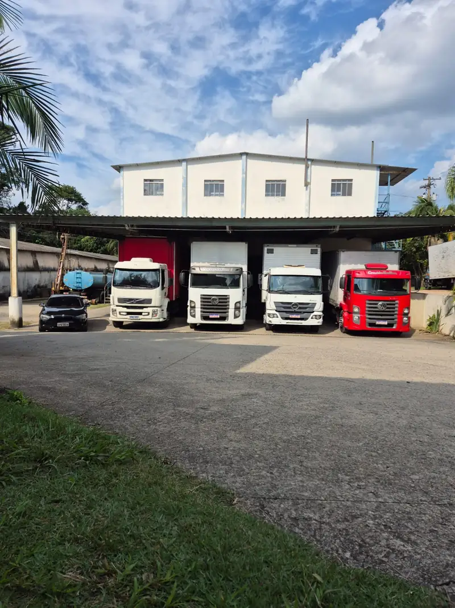

Carga fracionada
Sua carga divide o caminhão com a de outros clientes que vão para a mesma região. Você paga só pelo espaço que ocupa.
De 1 caixa a 10 paletes Transportadora em Cotia (SP)
Transportadora em Cotia (SP)
Frota própria de 11 caminhões, seguro em toda viagem até o valor da nota fiscal e rastreamento por satélite 24 horas. Coleta de manhã, entrega à tarde na Grande São Paulo.
RCTR-C e RC-DC cobrem acidente, roubo e desvio até o valor da nota fiscal.
Rastreador por satélite em todos os caminhões, com bloqueio remoto em caso de desvio.
11 caminhões da casa. Nenhum frete é repassado para terceiros.
RNTRC ativo na ANTT, com CT-e e MDF-e emitidos em toda viagem.
O motorista confere os volumes com a nota fiscal e fotografa a carga já arrumada no caminhão.
Uma central acompanha a rota por satélite e bloqueia o caminhão se ele sair do trajeto combinado.
Se houver acidente, roubo ou desvio, a ZUPO abre o sinistro e acompanha até a indenização.
O motorista fotografa o canhoto assinado e a foto chega para você na hora.

“Seu destino, nosso compromisso.”ZUPO Transportadora
Atendemos indústrias, distribuidores e lojas virtuais de Cotia, da região oeste e da capital.
Sua carga divide o caminhão com a de outros clientes que vão para a mesma região. Você paga só pelo espaço que ocupa.
De 1 caixa a 10 paletesO caminhão inteiro é seu. Ele sai da sua doca e vai direto ao destino, sem parar em outro depósito no caminho.
Truck baú ou graneleiro até 14 tO VUC pode circular na Zona de Máxima Restrição de Circulação de São Paulo, onde caminhão comum tem horário restrito.
2 VUCs na frotaUm caminhão e um motorista fixos para a sua operação, com rota e horários fechados por contrato mensal.
Contrato mensalPassamos na sua empresa nos dias e no horário combinados e levamos o que estiver separado, sem você pedir a cada envio.
Dias e horário fixosConte o que precisa transportar e a gente indica o caminhão e o tipo de frete.
Desde 2008 no Jardim Nova Coimbra, ao lado da Raposo Tavares. Todo frete sai em caminhão nosso, com motorista nosso.

Todos com rastreador por satélite e revisão a cada 10 mil km. Idade média de 5 anos.
das entregas no prazo em 2025
na Grande São Paulo, para pedidos confirmados até as 11h
em Cotia, desde 2008

O galpão tem cobertura para carregar em dia de chuva sem molhar a mercadoria.
entregas por mês


Pelo Rodoanel, o caminhão chega à Anhanguera, à Bandeirantes, à Dutra e à Imigrantes sem atravessar a capital. Coleta e entrega todo dia útil em:
Pelo WhatsApp ou pelo bloco de cotação no topo da página. O valor sai em até 30 minutos.
Confirmou até as 11h, coletamos no mesmo dia. Depois disso, no dia útil seguinte.
Mandamos a chave do CT-e no seu WhatsApp. Com ela, você vê no site da Sefaz quando a carga sai para entrega.
Na entrega o motorista fotografa o canhoto assinado e a foto chega no mesmo WhatsApp.
 Coleta no mesmo dia
Coleta no mesmo dia
Confirme até as 11h e a coleta sai ainda pela manhã, com seguro e rastreamento como em qualquer viagem.
Pedir coleta para hojeNão achou a resposta? Pergunte no WhatsApp (11) 99585-4072.
Sim. Toda viagem da ZUPO sai com seguro RCTR-C, obrigatório para transportadoras, que cobre acidente com o veículo, e RC-DC, que cobre roubo e desvio de carga. A cobertura vai até o valor da nota fiscal.
A ZUPO abre o sinistro com a seguradora e acompanha o processo até a indenização, que vai até o valor da nota fiscal. Por isso é importante que a nota acompanhe a carga com o valor correto.
Pela chave do CT-e, que enviamos no seu WhatsApp e que também vem no DACTE que acompanha a carga. Na aba Rastrear carga do site, a chave é copiada e a consulta pública da Sefaz abre. Lá aparece o evento MDF-e autorizado quando a carga sai para entrega. Na entrega, o motorista fotografa o canhoto assinado e a foto chega no seu WhatsApp.
Sim, na Grande São Paulo, para pedidos confirmados até as 11h. Pedidos confirmados depois disso são coletados no dia útil seguinte.
Sim. Os dois VUCs da frota podem circular na Zona de Máxima Restrição de Circulação (ZMRC), onde caminhões maiores têm horário restrito.
Não. Levamos de uma caixa a vários paletes. Abaixo de 30 kg vale a taxa mínima de frete.
Em até 30 minutos pelo WhatsApp (11) 99585-4072, de segunda a sexta das 7h às 18h e aos sábados das 7h às 12h. Informe origem, destino, peso, número de volumes e valor da nota fiscal.
Produtos perigosos, carga refrigerada, carga viva e mudanças residenciais.
Na Rua Saturno, 8, Jardim Nova Coimbra, Cotia (SP), CEP 06702-170, perto da Rodovia Raposo Tavares e a cerca de 9 km do Rodoanel Mário Covas.
Olá! Aqui é o atendimento da ZUPO Transportadora.
Escolha uma opção e a conversa abre no seu WhatsApp: